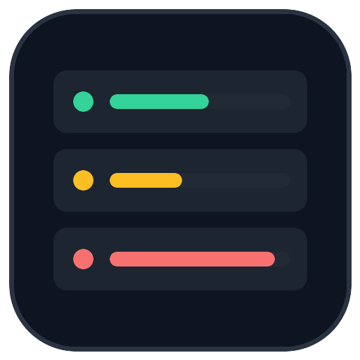

La interfaz del juego está diseñada a 1600×900 y aquí se vería tan reducida que los números del rack no se leen. Si estás en un móvil, gíralo; en una ventana pequeña, agrándala.
No hemos empezado la descarga (son unos 7 MB) para no gastártelos en balde. Puedes cargarlo igualmente si quieres echarle un ojo.